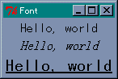
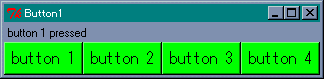
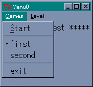
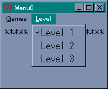
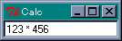
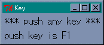

今度は色だけではなくフォントも変更してみましょう。フォントの指定には、いくつかの方法があるのですが、Windows 上ならば次の形式で行えばいいでしょう。
無名の配列： [family, size, style1, style2] 文字列： 'family size style1 style2'
フォントは無名の配列、または文字列を使って指定することができます。文字列で指定する場合は、要素を空白で区切ります。family はフォント名を表します。いまあなたが使っているパソコンで使用できるフォント名は、メソッド fontFamilies で求めることができます。Windows であれば 'ＭＳ 明朝' や 'ＭＳ ゴシック' といった名前を見つけることができるでしょう。size はフォントの大きさを表し数値で指定します。style1 と style2 はフォントのスタイルで、次の中から選びます。
style1 : normal, bold, roman, italic style2 : underline, overstrike
style1 と style2 は省略することができます。それでは、フォントを変更してみましょう。次のプログラムを見てください。
リスト : フォントの変更
use Tk;
$top = MainWindow->new();
$top->Label(-text => 'Hello, world',
-font => ["ＭＳ ゴシック", 12] )->pack();
$top->Label(-text => 'Hello, world',
-font => ["ＭＳ 明朝", 12,italic] )->pack();
$top->Label(-text => 'Hello, world',
-font => ["ＭＳ ゴシック", 16, underline] )->pack();
MainLoop();
テキストを表示するウィジェットは、オプション -font で使用するフォントを指定することができます。それでは実行してみましょう。
 フォントをいろいろ変えてみるこのように、個々のウィジェットのフォントはオプション -font で変更できますが、すべてのラベルウィジェットで使用する共通のフォントを設定したい場合もあるでしょう。Tk は各オプションのデフォルト値を持っています。このため、ユーザーは必要なオプションを指定するだけで、簡単にプログラミングすることができます。このデフォルト値はメソッド optionAdd を使って変更することができます。
たとえば、アプリケーションで使用するフォントを変更する場合は、次のように行います。
$top->optionAdd( '*font' => 'FixedSys 14' );
$top はメインウィンドウを表します。これで、テキストを表示するウィジェットは、指定したフォントを使って表示されます。第 1 引数は、値を設定するウィジェットを表すパターンです。第 2 引数は省略していますが、優先順位 priority (0 - 100) を設定することができます。
パターンは、アプリケーション名、ウィジェット名、オプション名をドットで区切って表しますが、ワイルドカード * やウィジェットを表すクラス名を指定することもできます。*font の場合は、アプリケーションで使用するフォントを指定することになります。ラベルに対してフォントを設定したい場合は *Label.font となります。
たとえば、前回作成したボタンを表示するプログラムに次の 2 行を加えてください。
$top->optionAdd( '*Button.font' => 'FixedSys 14' ); $top->optionAdd( '*Button.background' => green );
これで、表示されるボタンのフォントと背景色は、設定された値となります。
 ボタンのフォントと背景色を変更ところで、M.Hiroi が使用している Tk.pm (version 800.022) では、optionAdd でフォントを指定する場合、無名の配列を使うと正常に動作しません。フォントの指定には文字列を使ってください。ただし、要素を空白で区切るため、'ＭＳ ゴシック' のように空白を含むフォント名を指定すると、ＭＳをフォント名と判断するためエラーになってしまいます。この場合、メソッド fontCreate を使って、アプリケーション独自のフォント名を作成してください。
$widget->fontCreate( fontname, option => value, ... );
第 1 引数には作成するフォント名、あとの引数にはオプションを設定します。オプションはフォントの指定とほとんど同じです。
| -family | フォント名 |
| -size | サイズ |
| -weight | normal, bold |
| -slant | roman, italic |
| -underline | 下線の指定(boolean) |
| -overstrike | 打ち消し線の指定(boolean) |
プログラムは次のようになります。
# フォントの設定
$top->fontCreate('MS', -family => 'ＭＳ ゴシック' );
# オプションの指定
$top->optionAdd( '*Button.font' => 'MS 12' );
fontCreate で MS というフォント名を作成します。ここで -family に 'ＭＳ ゴシック' を設定します。あとは、optionAdd でフォントに MS を指定すれば、ボタンのフォントを 'ＭＳ ゴシック' にすることができます。
次は GUI には欠かせないメニューの作り方を説明します。Tk ではメニューのためのウィジェットがいくつか用意されていて、いろいろなメニューを構成することができます。今回は、Windows でも標準になっている メニューバー という方法を説明します。
メニューを作るにはメソッド Menu を使います。メニューバーの場合はオプション -type で menubar を指定します。作成したメニューバーはメインウィンドウのオプション -menu で配置します。プログラムは次のようになります。
リスト : メニューバーの設定 $top = MainWindow->new(); $m = $top->Menu( -type => 'menubar' ); $top->configure( -menu => $m );
これでメインウィンドウにメニューバーが設定されました。あとはこのメニューバーに具体的なメニューを追加します。メニューを設定する主なメソッドを示します。
各メソッドはオプションを設定することができます。cascade を指定すると、そのメニューを選択したときに複数のメニューを表示します。checkbutton は yes/no のような二者択一の情報を設定するために使います。command はメニューが選択されたときに、オプション -command で指定したコマンドを実行します。radiobutton は複数の値からひとつを選ぶ場合に使います。separator は区切りを表示するだけです。
checkbutton と radiobutton はメニューバーに直接定義するのではなく、cascade と組み合わせて使うことが一般的です。checkbutton と radiobutton を使う場合、選択する値をオプション -value で指定し、その値を格納する変数をオプション -variable で指定します。また、-command オプションを設定することもできます。この場合、変数に値がセットされるとともに、指定したコマンドが実行されます。
たとえば、将棋やリバーシのようなゲームのメニューを考えてみましょう。最低限必要となるメニューは、ゲームの開始、先手と後手の選択、コンピュータの強さの設定、などでしょうか。最初の 2 つはメニュー Games で設定し、強さはメニュー Level で選択することにします。この場合、まず Games と Level をメニューバーに追加します。
リスト : cascade の設定 $m1 = $m->cascade(-label => 'Games', -under => 0, -tearoff => 0); $m2 = $m->cascade(-label => 'Level', -under => 0, -tearoff => 0);
オプション -label はメニューに表示するテキストを設定します。オプション -underline は、ラベルの文字に下線を付け加えます。Windows の場合、Alt キーでメニューを選択できますが、この状態で下線のついた文字をキーボードから入力することで、そのメニューを選ぶことができます。
オプション -tearoff は、そのメニューをウィンドウから引きちぎることができるかを設定します。デフォルトでは yes になっています。その場合、メニューを選択すると一番上に破線が表示され、そこをクリックするとそのメニューが独立したウィンドウになります。
cascade は Menu のインスタンス (具体的には Tk::Menu::Cascade のインスタンス) を返すので、そこにメニューの項目を追加します。それではメニュー Games を設定しましょう。
リスト : Games の設定 $m1->command(-label => 'Start', -under => 0, -command => \&start ); $m1->separator; $m1->radiobutton(-label => 'first', -variable => \$action, -value => 0); $m1->radiobutton(-label => 'second', -variable => \$action, -value => 1); $m1->separator; $m1->command(-label => 'exit', -under => 0, -command => \&exit );
Start を選ぶとゲームを開始します。ゲームを開始するコマンド、これはゲームによって異なりますが、この例では start を実行します。
先手・後手の選択はラジオボタンを使っています。これで、先手、後手のどちらかを選ぶことができます。たとえば、後手をクリックすると、action の値は 1 にセットされ、ラベルの左側にレ点がつきます。使用する変数は、あらかじめ初期化しておきましょう。
これで Games をクリックすると、Start、先手・後手、Exit という 3 つのメニューが現れます。
 Games をクリックしたときの動作次はメニュー Level の設定です。
リスト : メニューの設定 (4) $m2->radiobutton(-label => 'Level 1', -variable => \$level, -value => 1); $m2->radiobutton(-label => 'Level 2', -variable => \$level, -value => 2); $m2->radiobutton(-label => 'Level 3', -variable => \$level, -value => 3);
ラジオボタンを使えば 3 つの中からひとつを選ぶことができます。ゲームの中身は空ですが、このように簡単にメニューを設定することができます。
 Level をクリックしたときの動作
リスト : メニューのサンプルプログラム
use Tk;
# グローバル変数
$level = 1;
$action = 0;
# ダミー
sub start { }
# メインウィンドウ
$top = MainWindow->new();
$top->optionAdd( '*font' => 'FixedSys 14' );
$m = $top->Menu( -type => 'menubar' );
$top->configure( -menu => $m );
# cascade の設定
$m1 = $m->cascade(-label => 'Games', -under => 0, -tearoff => 0);
$m2 = $m->cascade(-label => 'Level', -under => 0, -tearoff => 0);
# Games の設定
$m1->command(-label => 'Start', -under => 0, -command => \&start );
$m1->separator;
$m1->radiobutton(-label => 'first', -variable => \$action, -value => 0);
$m1->radiobutton(-label => 'second', -variable => \$action, -value => 1);
$m1->separator;
$m1->command(-label => 'exit', -under => 0, -command => \&exit );
# Level の設定
$m2->radiobutton(-label => 'Level 1', -variable => \$level, -value => 1);
$m2->radiobutton(-label => 'Level 2', -variable => \$level, -value => 2);
$m2->radiobutton(-label => 'Level 3', -variable => \$level, -value => 3);
# Label ウィジェットの設定
$l = $top->Label( -text => '***** Menu Test *****' );
$l->pack();
MainLoop();
今までの例題は、マウスで操作するものばかりでした。今度はキーボードからの入力を受け付けるウィジェットを説明します。
エントリー (entry) は 1 行の文字列を入力、または編集することができます。例題として、数式を入力して計算する calc.pl を作ります。これはとても簡単に作ることができます。まずエントリーから説明しましょう。
エントリーはメソッド Entry で作成します。よく使うオプションは -textvariable です。エントリーで入力されたデータは指定したグローバル変数に格納されます。また、グローバル変数の値が変更されると、エントリーの内容も変更されます。面白いオプションが -show です。これはパスワードのように画面に見えてはいけない文字列を打ち込むときに使います。たとえば、-show => '*' とすれば、入力された文字は * として表示されます。
メソッドは cget, configure のほかに、文字列の取得、挿入、削除、カーソルの移動、カット & ペースト、スクロールなど、たくさん用意されていますが、文字列の入力だけならば、それらを使う機会はあまりないでしょう。また、エントリーのキー操作は Emacs に準じているので、Emacs / Mule を使っているユーザーには扱いやすいと思います。
それではプログラムを作りましょう。データの入力が完了したらボタンを押してもらってもいいのですが、データはキーボードから入力するのですから、マウスよりもキーボードで操作した方がいいでしょう。リターンキーの入力でデータを計算するようにします。キー入力もイベントのひとつですからバインディングを設定することができます。プログラムは次のようになります。
リスト : 式入力電卓
use Safe;
use Tk;
$buffer = "";
$cpt = new Safe;
# 計算
sub calc {
$buffer = $cpt->reval( $buffer );
}
$top = MainWindow->new();
$e0 = $top->Entry( -textvariable => \$buffer );
$e0->pack();
$e0->focus;
$e0->bind("<Return>", \&calc ); # バインディング
MainLoop();
計算は関数 eval を使えば簡単です。eval は与えられた文字列を Perl のコードとして実行します。eval を使う場合、system などの危険な関数は、実行できないようにしておいた方が安全です。このため、Safe モジュールを使うことにします。メソッド reval が文字列を Perl のコードとして評価しますが、危険な関数は実行できません。
とても簡単なプログラムですが、sin, cos, tan など Perl に定義されている関数を呼び出すことができるので、簡単な関数電卓としても使うことができます。
 数式を入力するこのプログラムのポイントは bind メソッドです。
$widget->bind( eventsequence, callback );
すでにバインドされているコールバック関数がある場合、新しい関数に差し替えられます。callback を省略すると、そのイベントにバインドされている関数が返されます。引数を省略すると、そのウィジェットにバインドされているすべてのイベントを、リストに格納して返します。
それから、bind で設定されたコールバック関数が呼び出される場合、第 1 引数にウィジェットのインスタンスがセットされ、そのあとに指定した引数がセットされます。ご注意くださいませ。
イベントの指定は次のような構文を持っています。
<modifier-modifier-type-detail>
type は GUI 環境上で発生するイベントタイプを表します。ユーザーが操作するときに発生する主なイベントタイプには次のようなものがあります。
| Key, KeyPress | キーが押された |
| KeyRelease | キーが離された |
| Button, ButtonPress | マウスのボタンが押された |
| ButtonRelease | マウスのボタンが離された |
| Motion | マウスの移動 |
| Enter | マウスカーソルがウィンドウの中に入った |
| Leave | マウスカーソルがウィンドウから出た |
このほかにも、ウィンドウが破棄されたときに発生するイベントなど、様々なイベントタイプがあります。
マウスとキーのイベントには、ボタンやキーの種類を detail で指定します。マウスでは左ボタンが 1 となります。キーの種類は名前で指定します。英数字はその文字がそのまま名前となります。このほかに、改行キーに対する Return、バックスペースキーに対する BackSpace などがあります。
detail を指定する場合は type を省略することができます。ただし、<1> という指定は <KeyPress-1> ではなく <Button-1> となるので注意してください。また、通常の英数字の場合、<> も省略することができます。つまり、<KeyPress-a> は a と書くことができます。それから、<KeyPress> のように detail を省略すると、種類によらずキーが押されたときにバインドされたコマンドが実行されます。
イベントタイプの前にはモディファイア (modifier) をつけることができます。たとえば、<Control-d> はコントロールキーと d キーを同時に押したときのイベントを表します。主なモディファイアを次に示します。
| Control | Ctrl キーを押しながらの入力 |
| Shift | Shift キーを押しながらの入力 |
| Alt | Alt キーを押しながらの入力 |
| Button1, B1 | マウスの左ボタンを押しながらの入力 |
| Button3, B3 | マウスの右ボタンを押しながらの入力 |
| Double | ダブルクリック |
| Triple | トリプルクリック |
Tk の出身地である X Window は 3 ボタンマウスを使うので、Button2 は右ボタンではなく中ボタンとなります。たとえば、左ボタンのダブルクリックに対応するイベントは <Double-1> となります。また、イベントタイプは複数個指定することができます。たとえば、<Escape>a はEsc キーが押されたあとで a キーを押したイベントに対応します。
バインドされたコールバック関数にイベントの詳細情報を渡すには、関数 Ev( type ) を使います。type には文字を指定します。よく使われる type を表に示します。
| b | マウスボタンの番号 |
| x,y | マウスカーソルの座標 |
| t | イベントの発生時刻 |
| A | キーに対応する文字 |
| K | キーに対応する名前 |
30 種類以上の情報にアクセスすることができます。たとえば、次のプログラムを実行すると、キーに対応する名前を表示することができます。
リスト : キーの名前を表示
use Tk;
$buffer = "";
$top = MainWindow->new();
$top->optionAdd( '*font' => 'FixedSys 14' );
# キーの表示
sub print_key {
my ($obj, $key) = @_;
$buffer = "push key is $key";
}
$top->Label( -text => '*** push any key ***' )->pack();
$l = $top->Label( -textvariable => \$buffer );
$l->pack( -anchor => w );
$l->bind("<Any-KeyPress>", [\&print_key, Ev('K')] );
$l->focus;
MainLoop();
コールバック関数 print_key が呼び出されるときは、ラベルのインスタンスが第 1 引数にセットされます。[\&print_key, Ev('K')] を見ると、第 1 引数は Ev('K') で取得した名前のように思えますが、名前は第 2 引数にセットされるのです。ご注意くださいませ。
実際に試してみると、F1 や F2 キーには F1, F2 という名前が割り当てられていることがわかります。
 F1 キーを押したときの動作一般の GUI アプリケーションの場合、キー入力はアクティブになっているウィンドウに渡されます。Tk では、これを フォーカスウィンドウ (focus window) といいます。フォーカスウィンドウは、マウスの操作によって変更することができますが、メソッド focus によってプログラムで設定することができます。
$widget->focus; $widget->focusForce;
focus はフォーカスウィンドウを $widget に設定します。focusForce はフォーカスウィンドウを強制的に $widget に設定します。この場合、ほかのアプリケーションがアクティブになっていても、指定したウィンドウがアクティブになります。